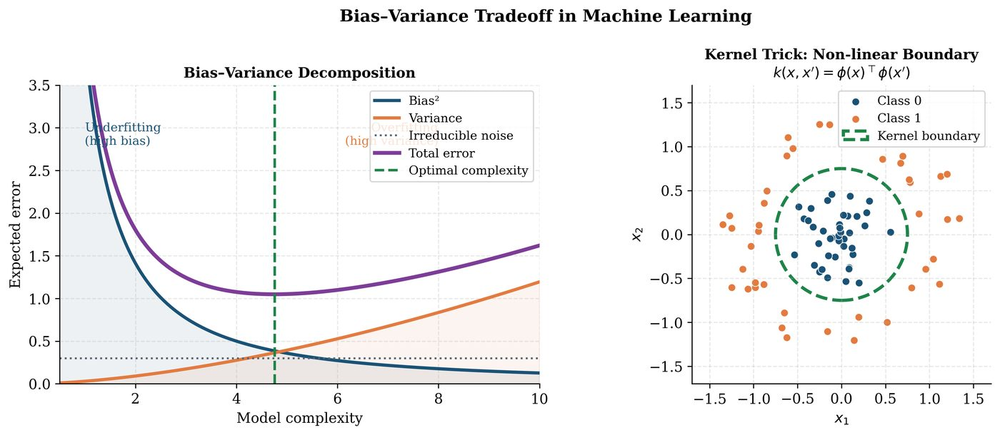

Chapter 4: Machine Learning Foundations¶
Every quantum ML algorithm has a classical antecedent. Before we can appreciate what quantum computing adds, we must deeply understand what classical ML already achieves — and where its limits lie. This chapter reviews statistical learning theory, supervised and unsupervised learning, kernel methods, and deep learning, with particular emphasis on the structures (kernels, SVMs, neural networks) that have direct quantum extensions.
Learning Objectives
By the end of this chapter, you will be able to:
-
State and apply PAC learning theory, VC dimension, and Rademacher complexity
-
Derive the SVM primal and dual problems and apply the kernel trick
-
Implement PCA and k-Means from first principles
-
Understand backpropagation in neural networks and the Adam optimizer
-
Work with Reproducing Kernel Hilbert Spaces (RKHS) and Mercer’s theorem
-
Recognize which classical ML structures have quantum analogues
4.1 Statistical Learning Theory¶
4.1.1 Empirical Risk Minimization¶
A learning problem: given \(\mathcal{D} = \{(\mathbf{x}_i,y_i)\}_{i=1}^N\) drawn i.i.d. from distribution \(\mathcal{P}\), find \(f^* \in \mathcal{H}\) minimizing the true risk:
Since \(\mathcal{P}\) is unknown, we minimize empirical risk:
Generalization gap: \(R[\hat{f}] - \hat{R}_N[\hat{f}] \leq \epsilon\) with probability \(\geq 1-\delta\) when \(N\) is large enough (quantified by VC theory).
4.1.2 PAC Learning and VC Dimension¶
Definition: PAC Learning
A concept class \(\mathcal{C}\) is Probably Approximately Correct (PAC) learnable if there exists an algorithm \(A\) such that for any \(\epsilon,\delta>0\) and any distribution \(\mathcal{P}\), given \(N \geq N_0(\epsilon,\delta)\) samples:

Definition: VC Dimension
The Vapnik-Chervonenkis (VC) dimension \(d_{\text{VC}}(\mathcal{H})\) is the largest set of points that \(\mathcal{H}\) can shatter (correctly classify in all \(2^m\) possible label assignments).
Fundamental theorem of statistical learning: For a finite-dimensional hypothesis class with VC dimension \(d\):
4.1.3 Rademacher Complexity¶
where \(\sigma_i \in \{-1,+1\}\) are i.i.d. Rademacher random variables. Generalization bound: \(R[f] \leq \hat{R}_N[f] + 2\mathcal{R}_N(\mathcal{F}) + O(\sqrt{\log(1/\delta)/N})\).
4.2 Support Vector Machines¶
4.2.1 Hard-Margin SVM: Primal¶
Given linearly separable data with labels \(y_i \in \{-1,+1\}\):
The margin is \(2/\|\mathbf{w}\|\). Maximizing the margin corresponds to minimizing \(\|\mathbf{w}\|^2\).
4.2.2 Dual Problem and the Kernel Trick¶
Lagrangian of (4.5): \(\mathcal{L} = \tfrac{1}{2}\|\mathbf{w}\|^2 - \sum_i \alpha_i[y_i(\mathbf{w}^\top\mathbf{x}_i+b)-1]\).
KKT stationarity: \(\mathbf{w}^* = \sum_i \alpha_i y_i \mathbf{x}_i\). Dual problem:
Data appears only through inner products \(\mathbf{x}_i^\top\mathbf{x}_j\). Kernel trick: Replace \(\mathbf{x}_i^\top\mathbf{x}_j \to k(\mathbf{x}_i,\mathbf{x}_j)\). Decision function: \(f(\mathbf{x}) = \text{sign}\bigl(\sum_i \alpha_i y_i k(\mathbf{x},\mathbf{x}_i) + b\bigr)\).
Tip
The SVM dual formulation is why the quantum kernel trick works: replace \(k(\mathbf{x},\mathbf{x}') = \langle\phi(\mathbf{x}),\phi(\mathbf{x}')\rangle\) with \(k_Q(\mathbf{x},\mathbf{x}') = |\langle\psi(\mathbf{x})|\psi(\mathbf{x}')\rangle|^2\) (quantum fidelity). The SVM optimization becomes entirely classical. See Chapter 9.
Solved Example 4.1
Problem: Solve the SVM dual for two training points: \((\mathbf{x}_1, y_1) = ([1,1]^\top, +1)\) and \((\mathbf{x}_2, y_2) = ([-1,-1]^\top, -1)\).
Solution: Dual: \(\max \alpha_1 + \alpha_2 - \frac{1}{2}(\alpha_1^2\cdot\|\mathbf{x}_1\|^2 + 2\alpha_1\alpha_2 y_1y_2\mathbf{x}_1^\top\mathbf{x}_2 + \alpha_2^2\|\mathbf{x}_2\|^2)\). \(= \max \alpha_1+\alpha_2 - \frac{1}{2}(2\alpha_1^2 + 2\cdot(-1)\cdot(-2)\alpha_1\alpha_2 + 2\alpha_2^2)\) \(= \max \alpha_1+\alpha_2 - \alpha_1^2 - 2\alpha_1\alpha_2 - \alpha_2^2\) Subject to \(\alpha_1 - \alpha_2 = 0 \Rightarrow \alpha_1=\alpha_2=\alpha\). \(\max 2\alpha - 4\alpha^2\). Derivative: \(2-8\alpha=0 \Rightarrow \alpha=1/4\). \(\mathbf{w}^* = \frac{1}{4}[1,1]^\top - \frac{1}{4}[-1,-1]^\top = [1/2,1/2]^\top\). Margin \(= 2/\|\mathbf{w}^*\| = 2/(\frac{1}{\sqrt{2}}) = 2\sqrt{2}\). Decision boundary: \(x_1+x_2=0\).
4.3 Kernel Methods and RKHS¶
4.3.1 Reproducing Kernel Hilbert Spaces¶
Definition: Reproducing Kernel Hilbert Space
A RKHS \(\mathcal{H}_k\) is a Hilbert space of functions \(f:\mathcal{X}\to\mathbb{R}\) with a reproducing kernel \(k:\mathcal{X}\times\mathcal{X}\to\mathbb{R}\) satisfying:
-
\(k(\mathbf{x},\cdot) \in \mathcal{H}_k\) for all \(\mathbf{x}\)
-
Reproducing property: \(f(\mathbf{x}) = \langle f, k(\mathbf{x},\cdot)\rangle_{\mathcal{H}_k}\)
Theorem 4.1 (Mercer’s Theorem)
A symmetric function \(k:\mathcal{X}\times\mathcal{X}\to\mathbb{R}\) is a valid kernel (positive definite) iff there exists a feature map \(\phi:\mathcal{X}\to\mathcal{H}\) such that \(k(\mathbf{x},\mathbf{x}') = \langle\phi(\mathbf{x}),\phi(\mathbf{x}')\rangle_\mathcal{H}\).
Common kernels:
Note
The RBF kernel implicitly maps to an infinite-dimensional feature space! The quantum kernel \(k_Q(\mathbf{x},\mathbf{x}')\) maps to an exponentially large (\(2^n\)-dimensional) Hilbert space, which is one source of potential quantum advantage.
4.4 Neural Networks and Deep Learning¶
4.4.1 Feedforward Networks and Backpropagation¶
A neural network with \(L\) layers computes:
Backpropagation computes \(\nabla_{\mathbf{W}^{(l)}}\mathcal{L}\) via the chain rule:
\(\nabla_{\mathbf{W}^{(l)}}\mathcal{L} = \boldsymbol{\delta}^{(l)}\mathbf{a}^{(l-1)^\top}\).
4.4.2 Convolutional Neural Networks¶
A convolution layer computes: \((f*k)(i,j) = \sum_{u,v}f(i-u,j-v)k(u,v)\). Key properties: translation equivariance (shift input \(\to\) shift output), weight sharing (same kernel slides across image), and pooling (spatial downsampling). These concepts directly inspire QCNN design (Chapter 11).
4.4.3 Adam Optimizer¶
Defaults: \(\beta_1=0.9\), \(\beta_2=0.999\), \(\epsilon=10^{-8}\).
4.5 Unsupervised Learning¶
4.5.1 Principal Component Analysis (PCA)¶
Algorithm: PCA Algorithm
Input: Data matrix \(\mathbf{X} \in \mathbb{R}^{N\times d}\), target rank \(k\).
Output: Projection matrix \(\mathbf{P}\in\mathbb{R}^{d\times k}\), scores \(\mathbf{Z}\in\mathbb{R}^{N\times k}\).
-
Center data: \(\tilde{\mathbf{X}} = \mathbf{X} - \bar{\mathbf{X}}\)
-
Compute covariance: \(\mathbf{C} = \frac{1}{N-1}\tilde{\mathbf{X}}^\top\tilde{\mathbf{X}}\)
-
Eigendecompose: \(\mathbf{C} = \mathbf{V}\Lambda\mathbf{V}^\top\), sort by \(\lambda_1\geq…\geq\lambda_d\)
-
Select top-\(k\) eigenvectors: \(\mathbf{P} = \mathbf{V}_{:,1:k}\)
-
Project: \(\mathbf{Z} = \tilde{\mathbf{X}}\mathbf{P}\)
Solved Example 4.2
Problem: Apply PCA to \(\mathbf{X} = \{[2,1],[4,3],[6,5],[8,7]\}\).
Solution: Mean: \(\bar{\mathbf{x}} = [5,4]^\top\). Centered: \(\tilde{\mathbf{X}} = [[-3,-3],[-1,-1],[1,1],[3,3]]\). Covariance: \(\mathbf{C} = \frac{1}{3}\begin{pmatrix}20&20\\20&20\end{pmatrix} = \begin{pmatrix}20/3&20/3\\20/3&20/3\end{pmatrix}\). Eigenvalues: \(\lambda_1 = 40/3\), \(\lambda_2 = 0\). First PC: \(\mathbf{v}_1 = [1/\sqrt{2}, 1/\sqrt{2}]^\top\). This data is perfectly 1-dimensional along the diagonal — the first PC captures 100% of variance.
4.5.2 k-Means Clustering¶
Algorithm: k-Means Algorithm (Lloyd’s Algorithm)
Input: Data \(\{\mathbf{x}_i\}_{i=1}^N\), number of clusters \(k\).
Output: Cluster assignments \(\{c_i\}\) and centroids \(\{\boldsymbol{\mu}_j\}\).
-
Initialize \(k\) centroids \(\boldsymbol{\mu}_1,…,\boldsymbol{\mu}_k\) (random or k-means++)
-
Repeat until convergence:
-
Assignment: \(c_i = \operatorname{argmin}_j \|\mathbf{x}_i - \boldsymbol{\mu}_j\|^2\)
-
Update: \(\boldsymbol{\mu}_j = \frac{1}{|C_j|}\sum_{i:c_i=j}\mathbf{x}_i\)
-
-
Return \(\{c_i\}\), \(\{\boldsymbol{\mu}_j\}\)
Objective: Minimizes \(\sum_{j=1}^k\sum_{i:c_i=j}\|\mathbf{x}_i-\boldsymbol{\mu}_j\|^2\) (within-cluster variance).
import numpy as np
from sklearn.svm import SVC
from sklearn.decomposition import PCA
from sklearn.cluster import KMeans
from sklearn.datasets import load_iris
# Load data
iris = load_iris()
X, y = iris.data, iris.target
# SVM with RBF kernel
svm = SVC(kernel='rbf', C=1.0, gamma='scale')
svm.fit(X[:100], y[:100])
# PCA to 2D
pca = PCA(n_components=2)
X_2d = pca.fit_transform(X)
print(f"Explained variance: {pca.explained_variance_ratio_}")
# k-Means
kmeans = KMeans(n_clusters=3, random_state=42)
labels = kmeans.fit_predict(X)
print(f"Cluster centers:\n{kmeans.cluster_centers_}")
# Manual backprop (2-layer network)
def sigmoid(z): return 1 / (1 + np.exp(-z))
def bce_loss(y_hat, y): return -np.mean(y*np.log(y_hat+1e-8) + (1-y)*np.log(1-y_hat+1e-8))
W1 = np.random.randn(4, 3) * 0.1
W2 = np.random.randn(1, 4) * 0.1
b1, b2 = np.zeros(4), np.zeros(1)
# Forward pass
z1 = X[:10] @ W1.T + b1
a1 = sigmoid(z1)
z2 = a1 @ W2.T + b2
y_hat = sigmoid(z2).flatten()
print(f"Loss: {bce_loss(y_hat, (y[:10]==0).astype(float)):.4f}")
4.6 Chapter Summary¶
Chapter Summary
-
Statistical learning theory: PAC learning, VC dimension, and Rademacher complexity quantify when and why learning generalizes. The \(O(\sqrt{d/N})\) generalization bound is the classical benchmark for QML to beat.
-
SVM: Primal-dual framework. The dual problem depends only on inner products \(\to\) kernel trick \(\to\) quantum kernel methods.
-
RKHS: Every valid kernel induces a feature space. Mercer’s theorem characterizes valid kernels. Quantum states define exponentially large feature spaces.
-
Neural networks: Backpropagation via chain rule. Adam optimizer. CNNs: translation equivariance and pooling — inspire QCNN architecture.
-
Unsupervised: PCA (eigendecomposition of covariance) and k-Means. Both have quantum speed-up claims (quantum PCA, quantum k-Means via Grover).
Exercises
Exercise . Show that the RBF kernel \(k(\mathbf{x},\mathbf{x}') = e^{-\|\mathbf{x}-\mathbf{x}'\|^2/(2\sigma^2)}\) is positive definite. Hint: Write \(\|\mathbf{x}-\mathbf{x}'\|^2 = \|\mathbf{x}\|^2 - 2\mathbf{x}^\top\mathbf{x}' + \|\mathbf{x}'\|^2\) and use the integral representation.
Exercise . Solve the SVM dual for the XOR dataset: \(\{([1,1],{-1}),([1,-1],{+1}),([-1,1],{+1}),([-1,-1],{-1})\}\). Show that with a linear kernel the problem is infeasible, but with \(k(\mathbf{x},\mathbf{x}')=(\mathbf{x}^\top\mathbf{x}')^2\) it becomes separable.
Exercise . Prove the representer theorem: the solution to \(\min_{f\in\mathcal{H}_k} \sum_i \ell(f(\mathbf{x}_i),y_i) + \lambda\|f\|_{\mathcal{H}_k}^2\) has the form \(f^*(\mathbf{x}) = \sum_i \alpha_i k(\mathbf{x},\mathbf{x}_i)\).
Exercise . Perform 2 iterations of k-Means by hand on \(\{[0,0],[1,0],[0,1],[5,5],[6,5],[5,6]\}\) with initial centroids \([0,0]\) and \([5,5]\).
Exercise . Implement a 3-layer neural network from scratch with NumPy (no frameworks) for binary classification on the moons dataset. Train using SGD with backpropagation. Report accuracy on a held-out test set.
Further Reading
-
Shalev-Shwartz & Ben-David, Understanding Machine Learning (Shalev-Shwartz and Ben-David 2014)
-
Bishop, Pattern Recognition and Machine Learning (Bishop 2006)
-
Schölkopf & Smola, Learning with Kernels (Schölkopf and Smola 2002)
-
Goodfellow, Bengio & Courville, Deep Learning (Goodfellow et al. 2016)